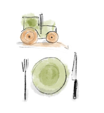

Für ernährungs- und umweltbewusste Personen, die wenig Zeit zum Einkaufen haben, ist Fresa das Mikrodepot und der Lieferservice regionaler Lebensmittel, der Zeit spart und den Bezug zur Regionalität schafft. Im Gegensatz zu anderen Lieferdiensten und Einzelhändlern liefert Fresa faire, frische Ware in personalisierten Boxen an frei wählbare Lieferstationen.
Fresa ist einzigartig
Spart Zeit

Direkt vom Feld
Nachhaltige Produktion
lecker und frisch
Fairer Handel
In deiner Nähe